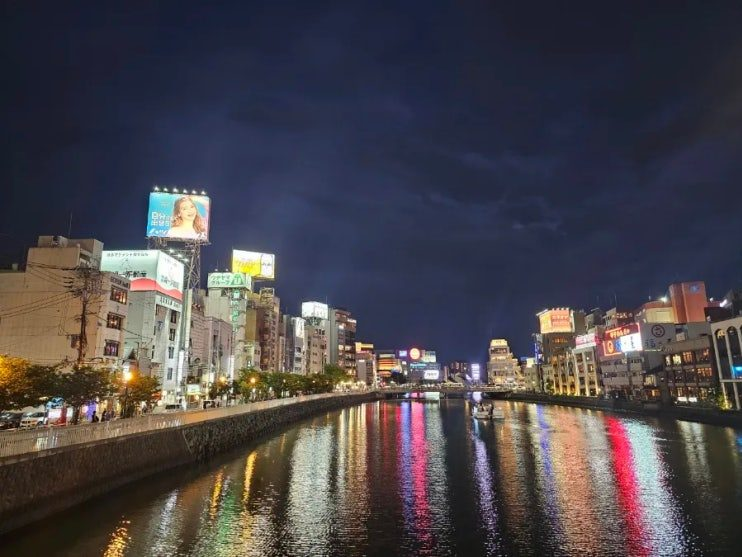
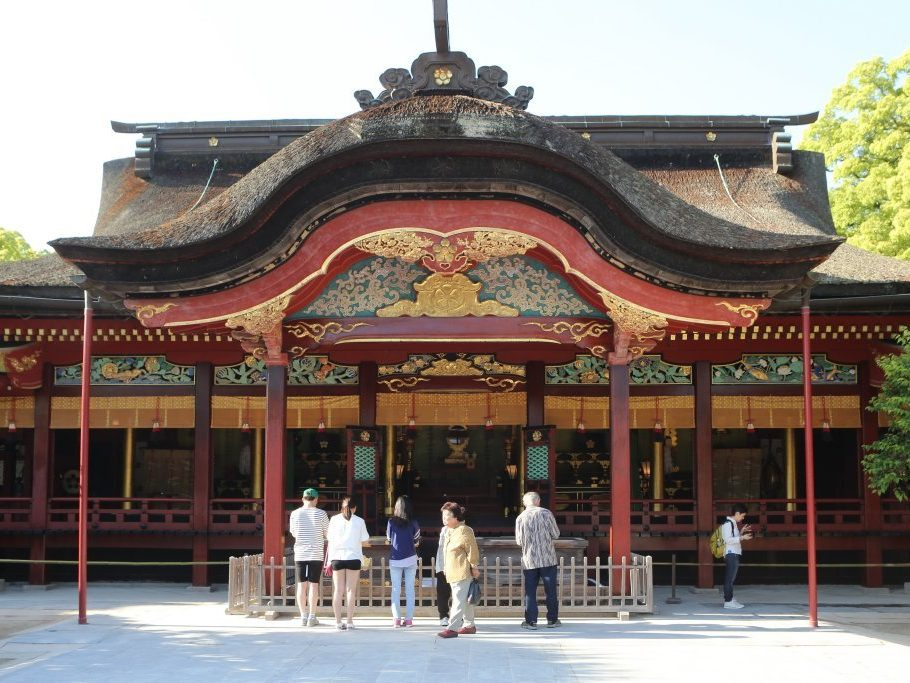
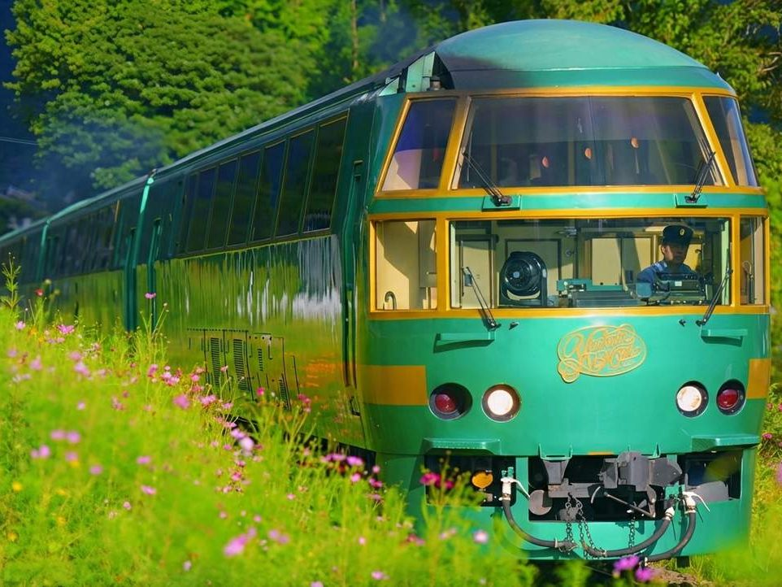
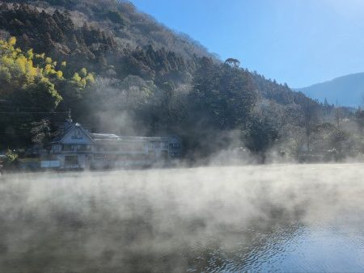
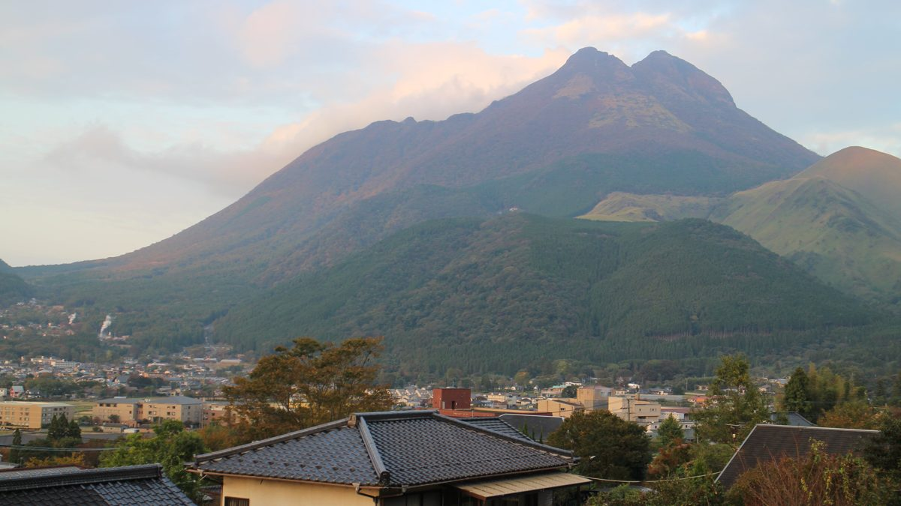

모이는 곳 · 출발 3일 전
11월 21일(토) 오전 7시, 인천공항에서 만나요
제1여객터미널 3층 D 카운터 앞

확정
가는 비행기 09:40 출발
대한항공 KE787 · 후쿠오카 11:10 도착
 이제부터 모이는 곳·비행기 시간이 바뀌면 바로 알려드려요
이제부터 모이는 곳·비행기 시간이 바뀌면 바로 알려드려요
아직 안 챙긴 것

편한 운동화
3개 중 2개 챙겼어요
여행 흐름
토
가는 비행기 09:40 출발
하카타 강변 호텔 · 저녁은 정하는 중

11/22일
다자이후 텐만구
오후 3시 캐널시티

11/23월
유후인노모리 열차로 유후인
산소 료칸 · 저녁은 료칸 가이세키

11/24화
긴린코 호수 산책
오후는 정하는 중

11/25수
오는 비행기 15:40 출발
공항 가는 길은 정하는 중
